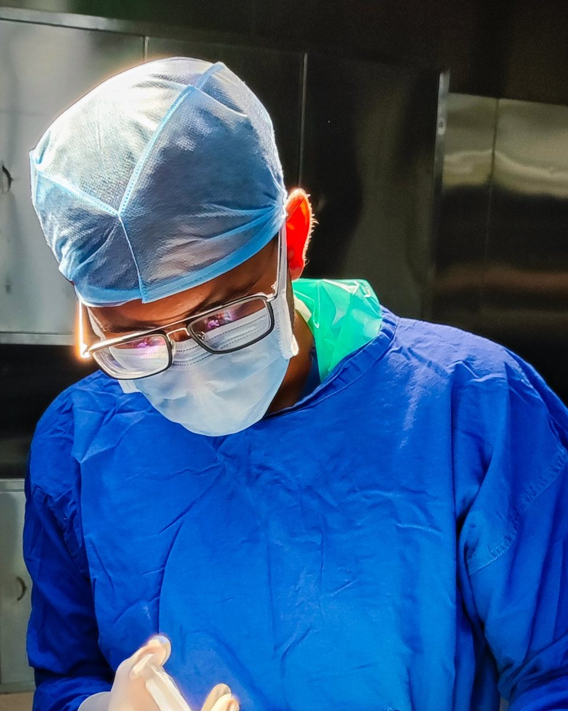

About
The person behind Insula Neurosciences, how the information here is written, and what this site is and isn't.

Profile
Dr Jemish Mayani
Neurosurgery resident, DrNB, PGY-4
Training
- 2023 – nowDrNB NeurosurgeryFourth year (PGY-4) of specialist training in brain, spine and nerve surgery
- 2016 – 2022MBBSGovernment Medical College, Bhavnagar
Neurosurgery deals with some of the most frightening words a person can hear: tumour, bleed, spinal cord. People often leave an appointment with a diagnosis but without a clear picture of what it means. Their questions only come later, at home, when there's no one to ask.
Insula Neurosciences is my attempt to help with that. I explain brain and spine conditions in plain language, describe the treatment options honestly, and avoid both false reassurance and unnecessary alarm.
How this site is written
The standards every page follows.
Plain language
Medical words are explained in everyday terms the first time they appear, with a glossary for the rest.
Based on guidance
Content follows accepted medical evidence and published guidance, such as NICE and NHS patient information. Sources are named where specific advice is given.
Every option
Pages describe all the reasonable choices, including not operating when that is safer, and are honest about risks.
One symptom, many causes
Symptoms are linked to the range of conditions that can cause them, never to a single diagnosis.
Reviewed over time
Each page shows when it was last reviewed. Pages are updated when guidance changes.
Independent
No advertising, sponsorship or tracking. No product or hospital pays to appear here.
What this site is, and isn't
This is an educational website. It can help you understand a condition and prepare for a conversation with your own doctor, but it can't replace one. I am a doctor in specialist training, and this site does not offer consultations, appointments or personal medical advice. In line with the National Medical Commission's guidance, it does not advertise services.
Why "Insula"?
The insula is a part of the brain tucked deep inside, hidden under folds of tissue. Its name is Latin for island. It helps you sense what is happening inside your own body, such as your heartbeat, hunger and breathing. Hidden, deep, and quietly important felt like the right name for a page about the brain.
Have a question?
Email is the best way to reach me for general, non-urgent questions. I usually reply within one to two days. Please don't send emergencies by email.